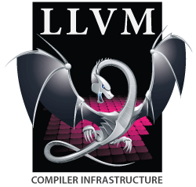

Ce sujet traite de l'éco-système C++ en allant aux outils à la communauté pour être plus productif dans le travail et devenir un développeur averti.
Compileurs

GCC g++
De facto le standard sous GNU/Linux:
-
sur Windows WinLibs: https://winlibs.com/ et WSL

LLVM clang++
Un compileur concurrent de GCC qui offre de meilleur performance
Microsoft visual C++
Pour utiliser le C++ moderne il faut installer la dernière version du logiciel
- Documentation sur Microsoft C++, C, Assembleur
- https://visualstudio.microsoft.com/fr/free-developer-offers/
Compileurs online
Il est possible d'accéder sur internet à des compileurs en ligne
-
https://godbolt.org/ gcc, permet d'avoir une sortie en assembleur
-
https://wandbox.org/ inclus Boost, clang++, gcc
Debugging
gdb
WinDBG
x64dbg
- https://x64dbg.com/ Pour Windows, .DLL, .EXE etc...
Code Analyseur
ASAN(Adress SANITIZER)
Stand-alone outils d'analyse
Valgrind
Valgrind est un outil de programmation libre pour déboguer, effectuer du profilage de code et mettre en évidence des fuites mémoires.
Profiling & Benchmarking
GNU gprof
Gprof est un logiciel GNU Binary Utilities qui permet d'effectuer du profilage de code. Cela permet de détecter dans le code le temps d'éxécution qui demanderait à être ré-écrit.
Valgrind
- cachegrind, callgrind
- https://valgrind.org/info/tools.html
Perf
perf: Linux profiling with performance counters
Documentation
Doxygen
Outil d'annotation et de création de documentation C++
Benchmarking librairies / framework
gperftools
Implementation du multi-threading pour malloc() haute performance
-
HEAP checker, CPU profiler
Build Systems
GNU Make
Make est un logiciel qui construit automatiquement des fichiers, souvent exécutables, ou des bibliothèques à partir d'éléments de base tels que du code source. Il utilise des fichiers appelés makefile qui spécifient comment construire les fichiers cibles
S'utilise pour de petit projet, tous les développeurs devraient savoir faire un makefile.
CMake
CMake est un outil permettant d'automatiser le processus de compilation et d'installation d'un logiciel.
-
Standard en C++
- A introduction to modern CMake
- A template CMake project to get you started with C++ and tooling
Test Unitaire
Doctest
Package management
Conan
-
Fonctionne avec CMake, MSbuild
Source code management
Git
- Le standard dans l'industrie
- https://git-scm.com/
Autres liens
Langage reference
cppreference
Best practices / Core guidelines
-
https://github.com/cpp-best-practices/cppbestpractices/blob/master/00-Table_of_Contents.md
-
https://github.com/isocpp/CppCoreGuidelines/blob/master/CppCoreGuidelines.md
Social Media
- C++ Communauté https://www.reddit.com/r/cpp/
#include ＜C++＞
- Discord server https://www.includecpp.org/discord/
Developpez.net
Groupe d'utilisateur
C++ francophone CPP-FRUG